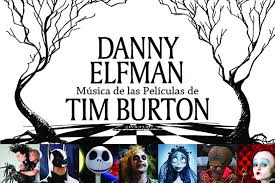
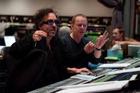

TIM BURTON, EL GENIO DE LO EXTRAÑO

LA MÚSICA DE DANNY ELFMAN
La música posee diversas funciones y es imprescindible destacar su importancia en el cine. Tal vez se deba a la capacidad de trasmitir sensaciones y sentimientos al espectador o por servir como apoyo a la hora de crear una atmósfera fílmica, convirtiendo la puesta en escena en sonido. De esta manera, el complemento indispensable para las películas de Burton no podía ser otro que la banda sonora que las acompaña. El director cuenta para ello con las creaciones de su ahora amigo, el compositor Danny Elfman, considerado uno de los compositores más originales de la industria cinematográfica.
La creación de una banda sonora
No sería la primera vez que se relaciona la música de un compositor con un director de cine, por lo que desde que Burton encontrase en él a la persona indicada a la hora del acompañamiento musical y la creación de la banda sonora, son la compenetración perfecta entre la música y la imagen, formando una de las colaboraciones más largas y fructíferas de la historia del cine. Juntos, han definido sus estilos y han marcado una serie de tendencias para posteriores cineastas.
Trabajan bien juntos gracias a la compatibilidad de sus preferencias artísticas, y es que Elfman también era un chico sensible que creció encerrado en su habitación rodeado de películas de terror y discos. Debido a esa similar infancia y juventud, tienen un don especial para conectar, ya que, comparten la misma peculiar visión del mundo.
Antes de dedicarse a la música, su afición por el cine le llevó a plantearse un futuro como montador, cámara e incluso director. Una vez descubierta la música como su verdadera vocación, comenzó a aprender de forma autodidacta y creó junto a su hermano el grupo musical Oingo Bongo, del que era el líder, además de cantante, guitarrista y compositor.
Burton buscaba un músico que tuviera ideas musicales originales y Danny Elfman y su estilo era ese algo innovador que Burton necesitaba. El compositor tiene la capacidad de hacer que parezca fácil encontrar la música que encaje perfectamente con los fotogramas.
Su estilo actual puede definirse como ingenioso, surrealista y postmoderno. Se caracteriza por su variedad, mezclando la ironía y el terror, pero centrándose siempre en la búsqueda de emociones. Son composiciones grotescas y oscuras, pero llenas de magia y con influencias románticas y cargadas de extravagancia y ritmo.